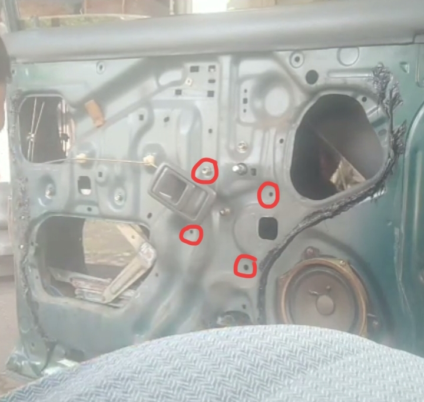
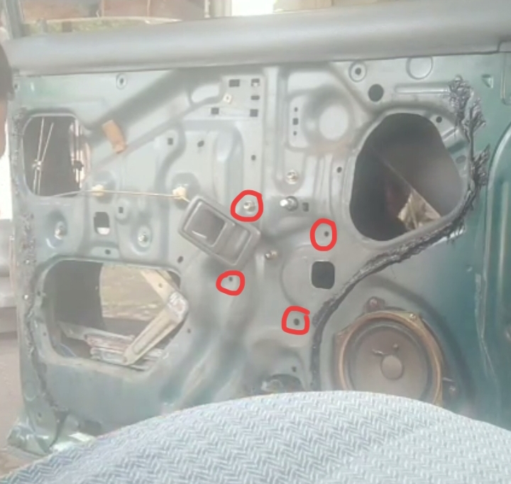
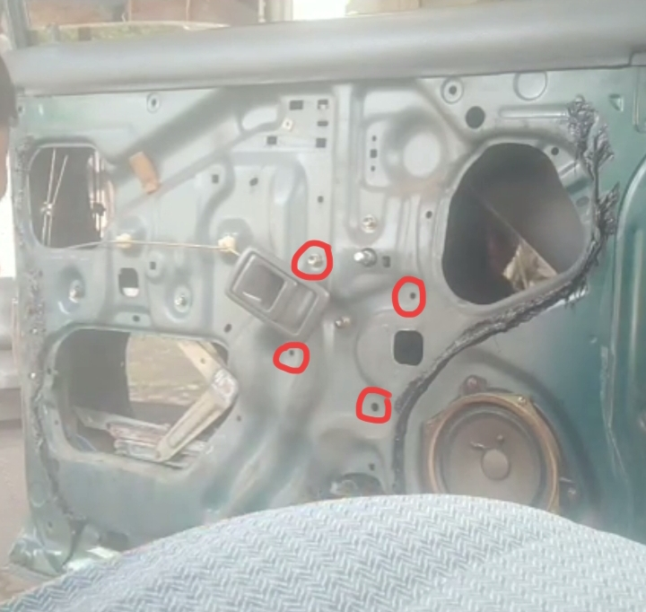

By Reggy Helva | August 8, 2024
Power window adalah fitur pada mobil yang mengatur buka tutup kaca jendela. Kehadiran power window dirasa sangat membantu karena tanpa memutar tuas di pintu mobil, kaca jendela bisa otomatis terbuka dan menutup.
Kebanyakan mobil masa kini sudah dilengkapi fitur power window. Namun pada mobil lawas bahkan mobil keluaran terbaru dengan fitur standar pun masih ada yang tidak dilengkapi power window. Salah satunya yaitu Mobil Vios gen 3. Mobil keluaran tahun 2013 yang masih ada hingga sekarang masih suka dijumpai ketika dalam perjalanan. Tetapi, tidak semua Mobil sudah ada standar bawaan power windownya. Sobat mungkin bertanya-tanya berapa sih harga power window untuk mobil vios gen 3 ini?
Sebelum melangkah lebih jauh soal harga power window, tak ada salahnya jika Sobat mengetahui dahulu bagaimana cara kerja power window. Secara umum, power window mengandalkan sistem mekatronik (mekanik dan elektronik) yang dipasang pada door trim.
Mekanisme power window bisa dikatakan mirip dengan kaca jendela manual yang menggunakan tuas. Hanya saja, titik putar tuas dihubungkan ke poros motor listrik yang ketika diaktifkan, maka sistem itu bekerja menaik-turunkan kaca jendela sesuai perintah.
Saat ini Penjualan power window untuk mobil ini sudah banyak beredar. Walau begitu, pastikan semua barang memenuhi standar part mobil untuk keamanan dan kenyamanan saat berkendara.
Terkait harga toko kami menyediakan power window vios gen 3 dengan harga 1,5 juta semua barang sudah lengkap, pengguna hanya tinggal melakukan pemasangan saja pada mobilnya.
Power window terdiri atas beberapa komponen kelistrikan yang saling berkaitan. Ada beberapa komponen yang perlu Sahabat ketahui:
1. Driver power window motor yang merupakan motor penggerak kaca jendela yang ada di sisi pengemudi.
2. Passenger power window motor adalah motor penggerak yang terletak pada kaca jendela pintu kiri atau pintu penumpang.
3. Driver power window switch yang berupa saklar utama yang ada di sisi pengemudi yang berfungsi berfungsi sebagai kontrol utama.
4. Passenger power window switch yang berupa saklar pada sisi pengemudi. Saklar ini hanya bisa mengontrol power window pada sisi penumpang saja.
5. Kabel set yang berupa rangkaian kabel yang harus dirakit menyesuaikan dengan masing-masing pintu, biasanya kabel sudah terakit untuk memudahkan pelanggan dalam memasang.
6. Armrest power window berupa dudukan saklar yang dipasang menghadap doortrim pintu mobil.
Rangkaian di atas merupakan skema power window untuk mobil dua pintu. Mudahnya, ada empat saklar dan empat motor yang terdapat pada pintu mobil.
Power window dapat berfungsi jika ada aliran listrik. Ketika kunci kontak diputar ke posisi ON, maka arus listrik dari aki akan menuju sekring yang kemudian mengalir ke masing-masing relay yang sudah terpasang pada modul power window di setiap pintu. Kontrol utama terletak pada pintu pengemudi, dan yang lainnya hanya bisa menurunkan atau menaikkan kaca jendela hanya dari saklar yang ada pada pintu tersebut. Arus listrik yang mengalir nantinya diubah menjadi energi gerak pada motor power window sehingga kaca jendela bisa naik dan turun.
Untuk pemasangan armrest hanya perlu membaut 2 - 3 buah pada doortrim.

Lepaskan engkolan kaca dan juga doortrim pada pintu lalu ganjal atau tahan kaca agar tidak jatoh. Buka proton wira plastik pelindung pada pintu mobil, setelah itu kendorkan baut yang ada pada pintu mobil. Jika baut sudah terlepas keluarkan regulator engkolan secara perlahan. Masukkan regulator power window depan secara perlahan ke dalam bagian pintu.pemasangan regulator mengikuti petunjuk. .Tidak perlu merubah dudukan baut atau bor lagi.Pastikan lubang regulator pas dan sesuai sebelum dipasang baut. Hal yang sama juga dilakukan pada kanan dan kiri.

Lepaskan engkolan kaca dan juga doortrim pada pintu lalu ganjal atau tahan kaca agar tidak jatoh. setelah itu kendorkan baut yang ada pada pintu mobil. Jika baut sudah terlepas keluarkan regulator engkolan secara perlahan. Masukkan regulator power window belakang secara perlahan ke dalam bagian pintu.pemasangan regulator mengikuti petunjuk.
Keterangan Arus pemasangan kabel
NOTED: Untuk pemasangan kabel bisa melalui bawah karpet mobil atau melalui dashboard mobil bisa disesuaikan sesuai kondisi dalam mobil. Apabila central lock belum ada, kabel tidak dipasang. jangan dipotong bila nanti central lock sudah ada tidak perlu membuat kabel kembali
Untuk mengetahui informasi lebih jelas terkait vidio pemasangan kabel silahkan klik link dibawah ini: